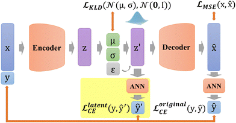
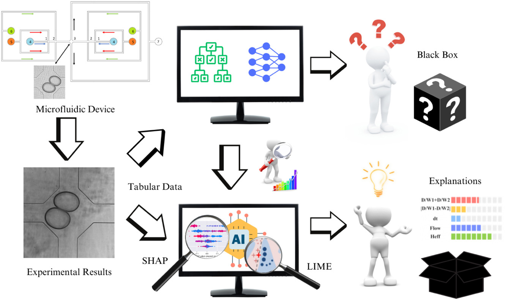

Main Works
- 
- 
Welcome to my personal website. I am Kewei Zhu, and here is a brief introduction about myself...
Description of the event or milestone that took place in January 2024.
Authors: Zeyu Xia, Kan Ma, Sibo Cheng, Thomas Blackburn, Ziling Peng, Kewei Zhu, Weihang Zhang, Dunhui Xiao, Alexander J Knowles, Rossella Arcucci
Physical Chemistry Chemical Physics (PCCP)

Authors: Nausheen Basha, Rossella Arcucci, Panagiota Angeli, Charitos Anastasiou, Thomas Abadie, César Quilodrán Casas, Jianhua Chen, Sibo Cheng, Loïc Chagot, Federico Galvanin, Claire E Heaney, Fria Hossein, Jinwei Hu, Nina Kovalchuk, Maria Kalli, Lyes Kahouadji, Morgan Kerhouant, Alessio Lavino, Fuyue Liang, Konstantia Nathanael, Luca Magri, Paola Lettieri, Massimiliano Materazzi, Matteo Erigo, Paula Pico, Christopher C Pain, Mosayeb Shams, Mark Simmons, Tullio Traverso, Juan Pablo Valdes, Zef Wolffs, Kewei Zhu, Yilin Zhuang, Omar K Matar
nternational Journal of Multiphase Flow

Description of Cooperator 1's role, contributions, and any other relevant information.